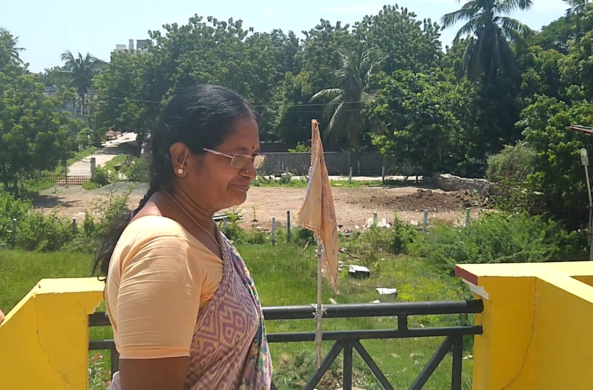
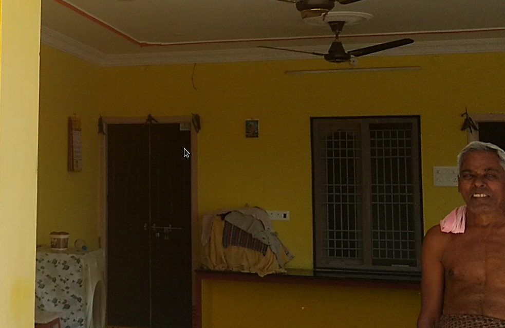

Please contact me with better ideas for a name!
I'm getting to know Madhira well. Today Sumathi took me all around town, we visited a temple for Sai Baba then saw where her cousin and aunt live. It's a given that people live with their children when they retire.
The house was the closest analog to Western houses I've seen. There was even a sizable lawn-- and they only cut it once a year. That's why I like this place.
Sumathi's Aunt, and her daughter's sensibly-kept lawn
Sumathi's Uncle, and the gorgeous house